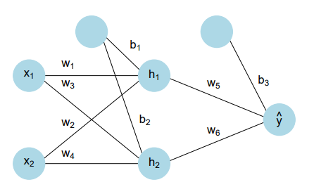

# Blibliotecas Python
import numpy as np
import pandas as pd
import matplotlib.pyplot as plt
import sympy as sp
import math
import time
from scipy.optimize import minimizeLista 2: Ajustando uma RNA
Observações Iniciais
Como sugerido, vamos gerar os pontos em R, salvar o arquivo e desenvolver o trabalho em Python.
Bibliotecas
Contexto
Considere um processo gerador de dados da forma \[\begin{align*} Y & \sim N(\mu, \sigma^2=1) \\ \mu & = |X_1^3 - 30 \text{sen} (X_2) + 10| \\ X_j & \sim \text{Uniforme}(-3, 3), \quad j=1, 2. \end{align*}\]
Nesse modelo (que iremos considerar como o “modelo real”), a esperança condicional de \(Y\) é dada por \(E(Y|X_1, X_2) = |X_1^3 - 30 \text{sen} (X_2) + 10|\). A superfície tridimensional \((E(Y|X_1, X_2), X_1, X_2)\) está representada em duas dimensões cartesianas na Figura 1.
### Figura 1: Gerando o gráfico da superfície
n <- 100
x1 <- seq(-3, 3, length.out=n)
x2 <- seq(-3, 3, length.out=n)
dados.grid <- as_tibble(expand.grid(x1, x2)) %>%
rename_all(~ c("x1", "x2")) %>%
mutate(mu=abs(x1ˆ3 - 30*sin(x2) + 10))
ggplot(dados.grid, aes(x=x1, y=x2)) +
geom_point(aes(colour=mu), size=2, shape=15) +
coord_cartesian(expand=F) +
scale_colour_gradient(low="white",
high="black",
name=TeX("$E(Y|X_1, X_2)$")) +
xlab(TeX("$X_1$")) + ylab(TeX("$X_2$"))
O código a seguir simula \(m=100.000\) observações desse processo (o arquivo foi gerado de maneira externa):
# Carregar os dados gerados no R
dados = pd.read_csv('dados.csv')
print(f"Dados carregados: {len(dados)} observações")
print(dados.head())Dados carregados: 100000 observações
x1.obs x2.obs mu y
0 1.363870 -0.833639 34.748472 35.120982
1 1.960455 0.463564 4.120608 4.331141
2 -1.848304 0.110323 0.382789 0.596088
3 -2.036404 -2.115443 27.214465 27.625098
4 1.812387 -1.917255 44.170668 43.690597Nesta lista estamos interessados em estimar o modelo acima usando uma rede neural simples, ajustada sobre os dados simulados. Precisamente, queremos construir uma rede neural com apenas uma camada escondida contendo dois neurônios.

Matematicamente, a rede é descrita pelas seguintes equações: \[\begin{align*} f_{0, 1} & = x_1 w_1 + x_2 w_2 + b_1 \\ f_{0, 2} & = x_1 w_3 + x_2 w_4 + b_2 \\ h_{1, 1} & = a(f_{0, 1}) \\ h_{1, 2} & = a(f_{0, 2}) \\ f_{1, 1} & = h_{1, 1} w_5 + h_{1, 2} w_6 + b_3 \\ \hat{y} & = h_{2, 1} = f_{1, 1}, \end{align*}\] onde \(a(x) = \frac{1}{1+e^{-x}}\) representa a função de ativação logística (sigmoide).
Adotaremos como função de perda o erro quadrático médio, expresso por: \[ J(\phi) = \frac{1}{m} \sum_{i=1}^m L(f(x_{1i}, x_{2i}; \phi), y_i) = \frac{1}{m} \sum_{i=1}^m (y_i - \hat{y}_i)^2, \] onde \(x_{ji}\) representa a j-ésima covariável () da i-ésima observação, \(\phi = (w_1, \ldots, w_6, b_1, b_2, b_3)\) é o vetor de pesos e viéses (parâmetros) e, pela definição da rede, \[f(x_{1i}, x_{2i}; \phi)=\hat{y}_i=a(x_{1i} w_1 + x_{2i} w_2 + b_1) w_5 + a(x_{1i} w_3 + x_{2i} w_4 + b_2) w_6 + b_3.\] Uma representação gráfica da rede está apresentada na figura acima. Observação importante: mudei a ordem dos pesos para que ficasse congruente com a notação matricial abaixo.
Em notação matricial, a rede neural pode ser descrita por \[\begin{align*} \mathbf{f}_0 & = \mathbf{\Omega}_0 \mathbf{x} + \mathbf{\beta}_0 \\ \mathbf{h}_1 & = \mathbf{a}(\mathbf{f}_0) \\ f_1 & = \mathbf{\Omega}_1 \mathbf{h}_1 + \beta_1 \\ \hat{y} & = h_2 = f_1, \end{align*}\] onde \[\begin{equation*} \mathbf{x} = \mathbf{h}_0 = \begin{pmatrix} x_1 \\ x_2 \end{pmatrix}, \; \mathbf{\Omega}_0 = \begin{pmatrix} w_1 & w_2 \\ w_3 & w_4 \end{pmatrix}, \; \mathbf{\beta}_0 = \begin{pmatrix} b_1 \\ b_2 \end{pmatrix}, \; \mathbf{f}_0 = \begin{pmatrix} f_{0, 1} \\ f_{0, 2} \end{pmatrix}, \; \mathbf{h}_1 = \begin{pmatrix} h_{1, 1} \\ h_{1, 2} \end{pmatrix}, \; \mathbf{\Omega}_1 = \begin{pmatrix} w_5 & w_6 \end{pmatrix}, \; \beta_1 = b_3 \quad \text{e} \end{equation*}\] \[\begin{equation*} \Phi = \{\Omega = \{\mathbf{\Omega}_0, \mathbf{\Omega}_1\}, \beta = \{\mathbf{\beta}_0, \beta_1\}\}. \end{equation*}\]
Início do projeto
A. Criando função computacional para prever y
Considerando a estrutura previamente citada, vamos criar uma função computacional para calcular \(\hat{y}=f(\mathbf{x}; \mathbf{\phi})\) em função de \(\mathbf{x}\) e \(\mathbf{\Phi}\). Vamos usar a função para calcular \(\hat{y}\) para os parâmetros abaixo
\[\begin{equation*} \mathbf{\Phi}^\star = \left\{ \mathbf{\Omega} = \left\{ \mathbf{\Omega}_0 = \begin{pmatrix} 0.1 & 0.1 \\ 0.1 & 0.1 \end{pmatrix}, \mathbf{\Omega}_1 = \begin{pmatrix} 0.1 & 0.1 \end{pmatrix} \right\}, \mathbf{\beta} = \left\{ \mathbf{\beta}_0 = \begin{pmatrix} 0.1 \\ 0.1 \end{pmatrix}, \mathbf{\beta}_1 = 0.1 \right\} \right\} \; \text{e} \; \mathbf{x}=\begin{pmatrix} 2 \\ 1 \end{pmatrix}. \end{equation*}\]
Vamos utilizar a estrutura matricial para a criação da função \(\mathbf{x}\) e \(\mathbf{\Phi}\). A entrada da função será o vetor \(\mathbf{x}\), de duas dimensões, e o vetor de parâmetros \(\mathbf{\phi} = (\omega_1,\omega_2, \omega_3, \omega_4,\omega_5,\omega_6, b_1, b_2, b_3)\) (que transformaremos em forma matricial dentro da função, por simplicidade de entrada).
#definindo a função considerando exatamente o formato de entrada
def predict_y(x: np.ndarray, # formato (2,)
phi: np.ndarray # formato (9,)
) -> float:
"""
x:[x1, x2] - entrada da rede
phi:[w1, w2, w3, w4, w5, w6, b1, b2, b3] - parâmetros da rede
"""
w1, w2, w3, w4, w5, w6, b1, b2, b3 = phi
x = np.array(x).reshape(2, 1) #precisamos de um vetor seja coluna para que a multiplicação matricial funcione
# Construir matrizes
W0 = np.array([[w1, w2],
[w3, w4]])
b0 = np.array([[b1],
[b2]])
W1 = np.array([[w5, w6]])
b1_a = np.array([[b3]])
#Inicio do cálculo matricial
f0 = b0 + np.dot(W0,x) #np.dot é usado para multiplicação matricial
h1 = 1/(1+np.exp(-f0)) #aplica sigmoide elemento a elemento
f1 = b1_a + np.dot(W1,h1)
y_p = f1[0,0] #retornar o float (entrada) e não a matriz
return y_pAlgumas observações sobre a função acima:
Decidimos colocar uma função que recebe dois vetores (\(x\in \mathbb{R}^2\) e \(\phi\in \mathbb{R}^9\)) pela simplicidade no input.
Dentro da função transformaremos esses vetores em matrizes \(\Omega_0\in \textnormal{M}(\mathbb{R})_{2\times 2}\), \(\Omega_1\in \textnormal{M}(\mathbb{R})_{2\times 1}\), \(\beta_0\in \textnormal{M}(\mathbb{R})_{1\times 2}\) e \(\beta_1\in \textnormal{M}(\mathbb{R})_{1\times 1}\).
Modificamos o formato do \(\mathbf{x}\) para que ele seja um vetor coluna e dessa forma a multiplicação matricial esteja bem definida.
Ao definir \(h_1\) note que a função é aplicada elemento a elemento e portanto a saída é (novamente) uma matriz.
A predição de \(y\) é exatamente o \(f_1\), que é uma matriz em \(\textnormal{M}(\mathbb{R})_{1\times 1}\). Como precisamos que o output seja um número (float), usamos \({f_1}[0,0]\) para selecionar a primeira (e única) entrada da matriz.
Agora vamos testar a função nos parâmetros mencionados, ou seja:
\(\mathbf{\phi} = (\omega_1,\omega_2, \omega_3, \omega_4,\omega_5,\omega_6, b_1, b_2, b_3) = (0.1,0.1, 0.1, 0.1,0.1,0.1, 0.1, 0.1, 0.1)\)
\(x = (2,1)\)
phi = (0.1, 0.1, 0.1, 0.1, 0.1, 0.1, 0.1, 0.1, 0.1)
x = (2, 1)
res = predict_y(x,phi)
print(f"ŷ = {res:.4f}")ŷ = 0.2197B. Função computacional para calcular a função de perda
Agora vamos criar uma função computacional para calcular a função de perda \(J(\mathbf{\phi})\). Lembre que, algebricamente, a função de perda foi definida com o erro médio quadrático (pois os dados tem distribuição normal):
\[ J(\phi) = \frac{1}{m} \sum_{i=1}^m L(f(x_{1i}, x_{2i}; \phi), y_i) = \frac{1}{m} \sum_{i=1}^m (y_i - \hat{y}_i)^2 \]
Temos duas maneiras de calcular a função de perda. A primeira não é 100% vetorizada pois a função \(\texttt{predict\_y}\) retorna um ponto (pois a entrada é pontual). Logo, a primeira maneira é a seguinte:
def loss(X: pd.DataFrame, phi: np.ndarray) -> float:
x1 = X['x1.obs']
x2 = X['x2.obs']
y = X['y'] #array
y_p = np.array([predict_y(np.array([x1_i, x2_i]), phi)
for x1_i, x2_i in zip(x1, x2)])
m = float(len(X))
erro = y - y_p
return np.dot(erro, erro) / mAqui usamos um método vetorizado, considerando que temos uma quantidade grande de dados a serem considerados. Algumas observações sobre o código:
- \(\textnormal{np.dot(erro, erro)}\) considera o produto interno de \(y\) com ele mesmo (aqui, considerando \(y\) um vetor de dimensão \(m\), que é o tamanho do dataset em questão). Mais explicitamente, \(y\) é um array 1D: \([y1, y2, y3, ..., y_m]\).
- Note que o produto interno já considera a soma do quadrado dos termos, então não precisamos de um loop nessa parte.
Agora vamos dividir os o conjunto de dados de modo que as primeiras 80.000 amostras componham o conjunto de treinamento, as próximas 10.000 o de validação, e as últimas 10.000 o de teste:
train_set = dados.iloc[:80000]
validation_set = dados.iloc[80000:90000]
test_set = dados.iloc[90000:100000]
print(f"Treinamento: {len(train_set)} amostras")
print(f"Validação: {len(validation_set)} amostras")
print(f"Teste: {len(test_set)} amostras")
print(f"Total: {len(train_set) + len(validation_set) + len(test_set)} amostras")Treinamento: 80000 amostras
Validação: 10000 amostras
Teste: 10000 amostras
Total: 100000 amostrasA perda da rede no conjunto de teste quando \(\phi=\phi^\star\) é dada por:
phi = (0.1, 0.1, 0.1, 0.1, 0.1, 0.1, 0.1, 0.1, 0.1)
loss_t = loss(test_set, phi)
print(f"A perda no conjunto de teste é dada por {loss_t:.4f}")A perda no conjunto de teste é dada por 663.6629Agora, se ajustarmos a função \(\texttt{predict\_y}\) para que ela recebe um dataframe e retorne um vetor de predições, conseguimos uma função computacionalmente mais eficiente:
#definindo a função considerando exatamente o formato de entrada
def predict_y_vetorizada(X: pd.DataFrame, #esse array deve conter apenas as 2 colunas das features
phi: np.ndarray # formato (9,)
) -> float:
"""
x:[x1, x2] - entrada da rede
phi:[w1, w2, w3, w4, w5, w6, b1, b2, b3] - parâmetros da rede
"""
w1, w2, w3, w4, w5, w6, b1, b2, b3 = phi
X_T = X.T #precisamos de um vetor seja coluna para que a multiplicação matricial funcione
# Construir matrizes
W0 = np.array([[w1, w2],
[w3, w4]])
b0 = np.array([[b1],
[b2]])
W1 = np.array([[w5, w6]])
b1_a = np.array([[b3]])
#Inicio do cálculo matricial
f0 = b0 + np.dot(W0,X_T)
h1 = 1/(1+np.exp(-f0)) #aplica sigmoide elemento a elemento
f1 = b1_a + np.dot(W1,h1)
y_p = f1.flatten() #achatar para 1D
return y_pNote que para essa função, o conjunto \(X\) deve ser um array com \(m\) linhas e \(2\) colunas (as features) para que as multiplicações funcionem corretamente. Dessa forma, o resultado da predição será um vetor com \(m\) entradas, uma para cada observação. Utilizando a última função de predição, podemos atualizar a função de perda para:
def loss_vetorizada(X: pd.DataFrame, phi: np.ndarray) -> float:
x1 = X['x1.obs']
x2 = X['x2.obs']
y = X['y'].values #array
y_p = predict_y_vetorizada(X[['x1.obs', 'x2.obs']].values, phi) #array
m = float(len(X))
erro = y - y_p
return np.dot(erro, erro) / mAgora vamos obter a perda no conjunto de teste quando \(\phi=\Phi^\star\) comparando o tempo de execução na versão vetorizada e na não-vetorizada:
phi = (0.1, 0.1, 0.1, 0.1, 0.1, 0.1, 0.1, 0.1, 0.1)
start = time.time()
loss_t = loss(test_set, phi)
end = time.time()
print(f"A perda no conjunto de teste é dada por {loss_t:.4f}")
print(f"Versão não vetorizada: {end - start:.4f} segundos")
start = time.time()
loss_t_v = loss_vetorizada(test_set, phi)
end = time.time()
print(f"A perda no conjunto de teste é dada por {loss_t_v:.4f}")
print(f"Versão vetorizada: {end - start:.4f} segundos")A perda no conjunto de teste é dada por 663.6629
Versão não vetorizada: 0.1618 segundos
A perda no conjunto de teste é dada por 663.6629
Versão vetorizada: 0.0061 segundosC. Expressão algébrica para o gradiente
Vamos usas a regra da cadeia para encontrar expressões algébricas para o vetor gradiente: \[ \nabla_{\mathbf{\phi}} J(\mathbf{\phi}) = \left(\frac{\partial J}{\partial w_1}, \ldots, \frac{\partial J}{\partial b_3} \right). \]
Lembre que \[ J(\phi) = \frac{1}{m} \sum_{i=1}^m L(f(x_{1i}, x_{2i}; \phi), y_i) = \frac{1}{m} \sum_{i=1}^m (y_i - \hat{y}_i)^2 \]
e pela definição da rede
\[ \hat{y} = f(x_{1}, x_{2}; \phi)=\hat{y}_i=a(x_{1} w_1 + x_{2} w_3 + b_1) w_5 + a(x_{1} w_2 + x_{2} w_4 + b_2) w_6 + b_3. \]
onde \(a(z) = \frac{1}{1 + \exp(-z)}\) e \(a'(z) = \frac{e^{-z}}{(1 + e^{-z})^2}\).
Para cada amostra temos que a perda é dada por \(L = (\hat{y} - y)^2\) (não vamos colocar o \(i\) para não pesar a notação):
Então, pela regra da cadeia, para cada amostra temos:
\[\begin{aligned} \frac{\partial L}{\partial w_1} &= -2(y-\hat{y})\cdot a'(x_{1} w_1 + x_{2} w_2 + b_1)\cdot w_5\cdot x_1 \\ \frac{\partial L}{\partial w_2} &= -2(y-\hat{y})\cdot a'(x_{1} w_1 + x_{2} w_2 + b_1)\cdot w_5\cdot x_2 \\ \frac{\partial L}{\partial w_3} &= -2(y-\hat{y})\cdot a'(x_{1} w_3 + x_{2} w_4 + b_2)\cdot w_5\cdot x_1 \\ \frac{\partial L}{\partial w_4} &= -2(y-\hat{y})\cdot a'(x_{1} w_3 + x_{2} w_4 + b_2)\cdot w_5\cdot x_2 \\ \frac{\partial L}{\partial w_5} &= -2(y-\hat{y})\cdot a(x_{1} w_1 + x_{2} w_2 + b_1) \\ \frac{\partial L}{\partial w_6} &= -2(y-\hat{y})\cdot a(x_{1} w_3 + x_{2} w_4 + b_2) \\ \frac{\partial L}{\partial b_1} &= -2(y-\hat{y})\cdot a'(x_{1} w_1 + x_{2} w_2 + b_1)\cdot w_5 \\ \frac{\partial L}{\partial b_2} &= -2(y-\hat{y})\cdot a'(x_{1} w_3 + x_{2} w_4 + b_2)\cdot w_6 \\ \frac{\partial L}{\partial b_3} &= -2(y-\hat{y}) \end{aligned}\]ou seja,
\[\begin{aligned} \frac{\partial L}{\partial w_1} &= -2(y-\hat{y})\cdot \frac{e^{-(x_{1} w_1 + x_{2} w_2 + b_1)}}{(1 + e^{-(x_{1} w_1 + x_{2} w_2 + b_1)})^2}\cdot w_5\cdot x_1 \\ \frac{\partial L}{\partial w_2} &= -2(y-\hat{y})\cdot \frac{e^{-(x_{1} w_1 + x_{2} w_2 + b_1)}}{(1 + e^{-(x_{1} w_1 + x_{2} w_2 + b_1)})^2}\cdot w_5\cdot x_2 \\ \frac{\partial L}{\partial w_3} &= -2(y-\hat{y})\cdot \frac{e^{-(x_{1} w_3 + x_{2} w_4 + b_2)}}{(1 + e^{-(x_{1} w_3 + x_{2} w_4 + b_2)})^2}\cdot w_6\cdot x_1 \\ \frac{\partial L}{\partial w_4} &= -2(y-\hat{y})\cdot \frac{e^{-(x_{1} w_3 + x_{2} w_4 + b_2)}}{(1 + e^{-(x_{1} w_3 + x_{2} w_4 + b_2)})^2}\cdot w_6\cdot x_2 \\ \frac{\partial L}{\partial w_5} &= -2(y-\hat{y})\cdot \frac{1}{1 + e^{-(x_{1} w_1 + x_{2} w_2 + b_1)}} \\ \frac{\partial L}{\partial w_6} &= -2(y-\hat{y})\cdot \frac{1}{1 + e^{-(x_{1} w_3 + x_{2} w_4 + b_2)}} \\ \frac{\partial L}{\partial b_1} &= -2(y-\hat{y})\cdot \frac{e^{-(x_{1} w_1 + x_{2} w_2 + b_1)}}{(1 + e^{-(x_{1} w_1 + x_{2} w_2 + b_1)})^2} \cdot w_5 \\ \frac{\partial L}{\partial b_2} &= -2(y-\hat{y})\cdot \frac{e^{-(x_{1} w_3 + x_{2} w_4 + b_2)}}{(1 + e^{-(x_{1} w_3 + x_{2} w_4 + b_2)})^2} \cdot w_6 \\ \frac{\partial L}{\partial b_3} &= -2(y-\hat{y}) \end{aligned}\]O gradiente de \(J(\phi)\) é a média dos gradientes individuais:
\[ \nabla J(\phi) = \frac{1}{m} \sum_{i=1}^m \nabla L^{(i)}(\phi) \]
Para cada parâmetro em \(\{w_1, w_2, \dots, b_3\}\):
\[ \frac{\partial J}{\partial \theta} = \frac{1}{m} \sum_{i=1}^m \frac{\partial L^{(i)}}{\partial \theta} \]
Por exemplo, explicitamente para \(w_1\):
\[ \frac{\partial J}{\partial w_1} = \frac{1}{m} \sum_{i=1}^m \left[ -2(y_i - \hat{y}_i) \cdot w_5 \cdot \frac{e^{-z_{1,i}}}{(1 + e^{-z_{1,i}})^2} \cdot x_{1,i} \right] \]
D. Back Propagation
Vamos criar uma função computacional que receba como entrada a lista \(\mathbf{\phi}\), uma matrix design (\(\mathbf{x}\)) e as respectivas observações (\(\mathbf{y}\)) e forneça, como saída, o gradiente definido no item c).
Para não realizar a mesma operação múltiplas vezes, vamos utilizar o algoritmo back-propagation. Lembre que:
Matematicamente, a rede é descrita pelas seguintes equações: \[\begin{align*} f_{0, 1} & = x_1 w_1 + x_2 w_2 + b_1 \\ f_{0, 2} & = x_1 w_3 + x_2 w_4 + b_2 \\ h_{1, 1} & = a(f_{0, 1}) \\ h_{1, 2} & = a(f_{0, 2}) \\ f_{1, 1} & = h_{1, 1} w_5 + h_{1, 2} w_6 + b_3 \\ \hat{y} & = h_{2, 1} = f_{1, 1}, \end{align*}\] onde \(a(x) = \frac{1}{1+e^{-x}}\) representa a função de ativação logística (sigmoide).
Em notação matricial, a rede neural pode ser descrita por \[\begin{align*} \mathbf{f}_0 & = \mathbf{\Omega}_0 \mathbf{x} + \mathbf{\beta}_0 \\ \mathbf{h}_1 & = \mathbf{a}(\mathbf{f}_0) \\ f_1 & = \mathbf{\Omega}_1 \mathbf{h}_1 + \beta_1 \\ \hat{y} & = h_2 = f_1, \end{align*}\] onde \[\begin{equation*} \mathbf{x} = \mathbf{h}_0 = \begin{pmatrix} x_1 \\ x_2 \end{pmatrix}, \; \mathbf{\Omega}_0 = \begin{pmatrix} w_1 & w_2 \\ w_3 & w_4 \end{pmatrix}, \; \mathbf{\beta}_0 = \begin{pmatrix} b_1 \\ b_2 \end{pmatrix}, \; \mathbf{f}_0 = \begin{pmatrix} f_{0, 1} \\ f_{0, 2} \end{pmatrix}, \; \mathbf{h}_1 = \begin{pmatrix} h_{1, 1} \\ h_{1, 2} \end{pmatrix}, \; \mathbf{\Omega}_1 = \begin{pmatrix} w_5 & w_6 \end{pmatrix}, \; \beta_1 = b_3 \quad \text{e} \end{equation*}\] \[\begin{equation*} \Phi = \{\Omega = \{\mathbf{\Omega}_0, \mathbf{\Omega}_1\}, \beta = \{\mathbf{\beta}_0, \beta_1\}\}. \end{equation*}\]
É possível mostrar que (Understanting Deep Learning) se \(L_i\) é a função de perda para a observação \(i\), ou seja, \(L_i = (\hat{y}_i - y_i)^2\), então as derivadas, considerando a notação matricial acima:
\[\begin{aligned} \frac{\partial L_i}{\partial \Omega_k} &= \frac{\partial L_i}{\partial f_k}\cdot h_k^T\\ \frac{\partial L_i}{\partial \beta_k} &= \frac{\partial L_i}{\partial f_k} \end{aligned}\]e
\[\begin{aligned} \frac{\partial h_1}{\partial f_0} = a'(f_0) \\ \frac{\partial f_1}{\partial h_1} = {\Omega_1}^T \end{aligned}\]Ou seja, é suficiente calcular \(\frac{\partial L_i}{\partial f_k}\) para todo \(k\) (que pode ser calculado de maneira recursiva).
Passo inicial considerando a notação simplificada: \[\frac{\partial L_i}{\partial f_1} = \frac{\partial L_i}{\partial \hat{y}} = -2(y-\hat{y})\]
Então,
\[\begin{aligned} \frac{\partial L}{\partial \mathbf{f}_0} &= \left(\Omega_1^T \cdot \frac{\partial L}{\partial f_1}\right) \odot a'(\mathbf{f}_0) \\ &= \left( \begin{pmatrix} w_5 \\ w_6 \end{pmatrix} \cdot (-2(y - \hat{y})) \right) \odot \begin{pmatrix} a'(f_{01}) \\ a'(f_{02}) \end{pmatrix} \\ &= \begin{pmatrix} -2w_5(y - \hat{y}) \cdot a'(x_1 w_1 + x_2 w_2 + b_1) \\ -2w_6(y - \hat{y}) \cdot a'(x_1 w_3 + x_2 w_4 + b_2) \end{pmatrix} \end{aligned}\]Logo:
\[\begin{aligned} \frac{\partial L}{\partial \Omega_0} &= \left[ \left( \Omega_1^T \cdot \frac{\partial L}{\partial \hat{y}} \right) \odot a'(\mathbf{f}_0) \right] \cdot \mathbf{x}^T \\ &= \begin{pmatrix} -2w_5(y - \hat{y}) \cdot a'(x_1 w_1 + x_2 w_2 + b_1) \\ -2w_6(y - \hat{y}) \cdot a'(x_1 w_3 + x_2 w_4 + b_2) \end{pmatrix} \cdot \begin{pmatrix} x_1 & x_2 \end{pmatrix}\\ &= \begin{pmatrix} -2 w_5 (y - \hat{y}) \cdot a'(f_{0,1}) \cdot x_1 & -2 w_5 (y - \hat{y}) \cdot a'(f_{0,1}) \cdot x_2 \\ -2 w_6 (y - \hat{y}) \cdot a'(f_{0,2}) \cdot x_1 & -2 w_6 (y - \hat{y}) \cdot a'(f_{0,2}) \cdot x_2 \end{pmatrix} \end{aligned}\]e,
\[\begin{aligned} \frac{\partial L}{\partial \Omega_1} &= \frac{\partial L}{\partial \hat{y}} \cdot \mathbf{h}_1^T \\ &= -2(y - \hat{y}) \cdot \begin{pmatrix} a(f_{0,1}) & a(f_{0,2}) \end{pmatrix} \\ &= \begin{pmatrix} -2(y - \hat{y}) \cdot a(x_1 w_1 + x_2 w_2 + b_1) & -2(y - \hat{y}) \cdot a(x_1 w_3 + x_2 w_4 + b_2) \end{pmatrix} \end{aligned}\]E para os vieses, temos:
\[\begin{aligned} \frac{\partial L}{\partial \beta_1} &= \frac{\partial L}{\partial \hat{y}} \\ &= -2(y - \hat{y}) \end{aligned}\]e,
\[\begin{aligned} \frac{\partial L}{\partial \beta_0} &= \left( \Omega_1^T \cdot \frac{\partial L}{\partial \hat{y}} \right) \odot a'(\mathbf{f}_0) \\ &= \begin{pmatrix} -2w_5(y - \hat{y}) \\ -2w_6(y - \hat{y}) \end{pmatrix} \odot \begin{pmatrix} a'(f_{0,1}) \\ a'(f_{0,2}) \end{pmatrix} \\ &= \begin{pmatrix} -2w_5(y - \hat{y}) \cdot a'(f_{0,1}) \\ -2w_6(y - \hat{y}) \cdot a'(f_{0,2}) \end{pmatrix} \end{aligned}\]Usando a notação matricial, temos algo consistente com a o vetor gradiente encontrado na parte c). Agora que conseguimos entender a notação matricial para esse exemplo, vamos montar uma função computacional que receba como entrada a lista \(\mathbf{\phi}\), uma matrix design (\(\mathbf{x}\)) e as respectivas observações (\(\mathbf{y}\)) e forneça, como saída, o gradiente definido no item c).
Versão Não-Vetorizada:
def gradiente(X: np.ndarray, y: np.ndarray, phi: np.ndarray) -> np.ndarray:
m = len(X)
grad_total = np.zeros(9)
w1, w2, w3, w4, w5, w6, b1, b2, b3 = phi
Omega0 = np.array([[w1, w2], [w3, w4]])
Omega1 = np.array([[w5, w6]])
beta0 = np.array([[b1], [b2]])
beta1 = b3
for i in range(m):
x = X[i].reshape(-1, 1) # (2×1)
f0 = Omega0 @ x + beta0
h1 = 1 / (1 + np.exp(-f0))
h1_d = np.exp(-f0) / (1 + np.exp(-f0))**2
y_hat = float((Omega1 @ h1 + beta1)[0, 0])
# Backward pass
dL_df1 = np.array([[-2 * (y[i] - y_hat)]])
dL_df0 = (Omega1.T @ dL_df1) * h1_d
# Gradientes
dL_dbeta1 = dL_df1[0, 0]
dL_dbeta0 = dL_df0
dL_dOmega1 = dL_df1 @ h1.T
dL_dOmega0 = dL_df0 @ x.T
grad_i = np.concatenate([
dL_dOmega0.flatten(), # w1, w2, w3, w4
dL_dOmega1.flatten(), # w5, w6
dL_dbeta0.flatten(), # b1, b2
[dL_dbeta1] # b3
])
grad_total += grad_i
return grad_total / mAlgumas obsevações sobre a função acima:
- \(\textnormal{gradtotal = np.zeros(9)}\) inicia com um vetor de tamanho \(9\) em que todas as entradas são \(0\) e vamos preenchendo com cada etapa do algoritmo.
- \(\textnormal{x = X[i].reshape(-1, 1)}\) transforma a \(i\)-ésima linha da matriz \(X\) em coluna.
- \(\textnormal{@}\) é uma outra notação (mais limpa) do operador multiplicador de matrizes.
- No Python, o produto de Hadamard é calculado com o operador
*entre arrays do numpy. - \(\textnormal{np.concatenate}\) vai transformar as matrizes num vetor seguinto a ordem dos vetor gradiente.
Versão Vetorizada:
def gradiente_vetorizado(X: np.ndarray, y: np.ndarray, phi: np.ndarray) -> np.ndarray:
w1, w2, w3, w4, w5, w6, b1, b2, b3 = phi
m = len(X)
# Construir matrizes
Omega0 = np.array([[w1, w2], [w3, w4]])
beta0 = np.array([[b1], [b2]])
Omega1 = np.array([[w5, w6]])
beta1 = b3
# Forward pass vetorizado
X_T = X.T # (2×m)
F0 = Omega0 @ X_T + beta0 # (2 × m)
H1 = 1 / (1 + np.exp(-F0))
H1_d = np.exp(-F0) / (1 + np.exp(-F0))**2
Y_hat = (Omega1 @ H1 + beta1).flatten() # (m,)
dL_dYhat = -2 * (y - Y_hat)
# Camada de saída
dL_dOmega1 = (dL_dYhat.reshape(1, -1) @ H1.T) / m
dL_dbeta1 = np.mean(dL_dYhat)
dL_dF0 = (Omega1.T @ dL_dYhat.reshape(1, -1)) * H1_d
dL_dOmega0 = (dL_dF0 @ X) / m
dL_dbeta0 = np.mean(dL_dF0, axis=1, keepdims=True)
# Juntar todos os gradientes
return np.concatenate([
dL_dOmega0.flatten(),
dL_dOmega1.flatten(),
dL_dbeta0.flatten(),
[dL_dbeta1]
])Vamos testar as duas funções de gradiente acima:
phi_test = np.array([0.1, 0.1, 0.1, 0.1, 0.1, 0.1, 0.1, 0.1, 0.1])
start = time.time()
grad_loop = gradiente(train_set[['x1.obs', 'x2.obs']].values,
train_set['y'].values, phi_test)
end = time.time()
tempo_loop = end - start
print(f"Versão com Loop: {tempo_loop:.4f} segundos")
print(f" Gradiente: {grad_loop}")
start = time.time()
grad_vec = gradiente_vetorizado(train_set[['x1.obs', 'x2.obs']].values,
train_set['y'].values, phi_test)
end = time.time()
tempo_vec = end - start
print(f"Versão Vetorizada: {tempo_vec:.4f} segundos")
print(f" Gradiente: {grad_vec}")Versão com Loop: 2.2307 segundos
Gradiente: [ -0.18243468 0.63490074 -0.18243468 0.63490074 -22.29573326
-22.29573326 -1.07108422 -1.07108422 -43.32383571]
Versão Vetorizada: 0.0075 segundos
Gradiente: [ -0.18243468 0.63490074 -0.18243468 0.63490074 -22.29573326
-22.29573326 -1.07108422 -1.07108422 -43.32383571]Considerando que vamos rodar vários passos desse mesmo algoritmo, escolheremos a versão vetorizada.
E. Método Gradiente
Vamos aplicar o método do gradiente descendente para encontrar os parâmetros que minimizam a função de perda no conjunto de treino considerando a inicialização abaixo, a taxa de aprendizagem \(\epsilon = 0.1\) com \(100\) iterações.
def gradiente_descendente(X_train: np.ndarray,
y_train: np.ndarray,
X_val: np.ndarray,
y_val: np.ndarray,
e: float,
phi: np.ndarray,
inic: np.ndarray,
n: int) -> tuple[np.ndarray, list, list, int, float, int]:
phi_atual = phi.copy()
# Listas para armazenar as losses em cada iteração
train_losses = []
val_losses = []
melhor_phi = phi_atual.copy()
melhor_val_loss = float('inf') #nada é 'maior'
melhor_train_loss = float('inf')
melhor_iter_val = 0
melhor_iter_train = 0
for iteration in range(n):
grad = gradiente_vetorizado(X_train, y_train, phi_atual)
#atualização de parâmetro (na direção oposta ao gradiente)
phi_atual = phi_atual - e * grad
train_loss = loss_vetorizada(pd.DataFrame({
'x1.obs': X_train[:, 0],
'x2.obs': X_train[:, 1],
'y': y_train
}), phi_atual)
val_loss = loss_vetorizada(pd.DataFrame({
'x1.obs': X_val[:, 0],
'x2.obs': X_val[:, 1],
'y': y_val
}), phi_atual)
train_losses.append(train_loss)
val_losses.append(val_loss)
if val_loss < melhor_val_loss:
melhor_val_loss = val_loss
melhor_phi = phi_atual.copy()
melhor_train_loss = train_loss
melhor_iter_val = iteration
if train_loss < melhor_train_loss:
melhor_train_loss = train_loss
melhor_iter_train = iteration
return melhor_phi, train_losses, val_losses, melhor_iter_val, melhor_train_loss, melhor_iter_train, melhor_val_lossNa função acima, armazenamos as perdas em cada passo (tanto na validação como no teste) para que, posteriormente, o gráfico fique mais fácil de ser gerado. Além disso, vamos exibir também a melhor iteração para cada conjunto.
A função acima irá retornar, nessa ordem:
- melhor_phi
- train_losses
- val_losses
- melhor_iter_val
- melhor_train_loss
- melhor_iter_train
- melhor_val_loss
Iniciaremos o algoritmo no vetor de parâmetros
\[\begin{equation*} \mathbf{\Phi}^0 = \left\{ \mathbf{\Omega} = \left\{ \mathbf{\Omega}_0 = \begin{pmatrix} 0 & 0 \\ 0 & 0 \end{pmatrix}, \mathbf{\Omega}_1 = \begin{pmatrix} 0 & 0 \end{pmatrix} \right\}, \mathbf{\beta} = \left\{ \mathbf{\beta}_0 = \begin{pmatrix} 0 \\ 0 \end{pmatrix}, \mathbf{\beta}_1 = 0 \right\} \right\}, \end{equation*}\]
usando a taxa de aprendizagem \(\epsilon=0.1\) e com \(100\) iterações. Para cada uma delas, vamos a perda no . Apresente a lista de parâmetros estimados (isto é, aqueles que geraram a menor perda na validação), indique em qual iteração eles foram observados e comente o resultado.
phi_inicial = np.array([0, 0, 0, 0, 0, 0, 0, 0, 0])
x = (2, 1)
# Agora desempacotando 7 valores
melhor_phi, train_losses, val_losses, melhor_iter_val, melhor_train_loss, melhor_iter_train, melhor_val_loss = gradiente_descendente(
X_train=train_set[['x1.obs', 'x2.obs']].values,
y_train=train_set['y'].values,
X_val=validation_set[['x1.obs', 'x2.obs']].values,
y_val=validation_set['y'].values,
e=0.1,
phi=phi_inicial,
inic=x,
n=100
)
print(f"Melhor validação: iteração {melhor_iter_val}, loss: {melhor_val_loss:.4f}")
print(f"Melhor treino: iteração {melhor_iter_train}, loss: {melhor_train_loss:.4f}")
print(f"Parâmetros finais: {melhor_phi}")Melhor validação: iteração 16, loss: 149.4005
Melhor treino: iteração 17, loss: 145.8916
Parâmetros finais: [-0.75778832 -2.40989992 -0.75778832 -2.40989992 8.2280801 8.2280801
2.17300733 2.17300733 11.38825398]A menor perda na validação foi encontrada na iteração \(16\), ou seja, depois disso, a perda irá ter um aumento (para esse tamanho de passo, possivelmente há uma oscilação em torno do ponto de mínimo, sem alcançar o mesmo depois da iteração em questão - possivelmente pelo tamanho do passo e pelo método sem momento que estamos utilizando). Comentaremos melhor esse aumento considerando a comparação com o conjunto de treinamento no item seguinte.
Vamos testar uma inicialização não simétrica para entender se a simetria gerada no exemplo anterior é algum problema da função em si (o que no caso, não será, a questão da simetria nos parâmetros é gerada pela inicialização anterior):
# Teste com inicialização assimétrica
phi_test = np.array([0.1, 0.2, 0.3, 0.4, 0.5, 0.6, 0.7, 0.8, 0.9])
grad = gradiente_vetorizado(
train_set[['x1.obs', 'x2.obs']].values[:100], # Use menos dados para teste
train_set['y'].values[:100],
phi_test
)
print("Gradientes:")
print(f"dW1, dW2, dW3, dW4: {grad[0]:.6f}, {grad[1]:.6f}, {grad[2]:.6f}, {grad[3]:.6f}")
print(f"dW5, dW6: {grad[4]:.6f}, {grad[5]:.6f}")
print(f"dB1, dB2, dB3: {grad[6]:.6f}, {grad[7]:.6f}, {grad[8]:.6f}")Gradientes:
dW1, dW2, dW3, dW4: -0.473852, 2.901149, -0.045680, 3.555326
dW5, dW6: -27.160485, -26.985960
dB1, dB2, dB3: -4.711250, -5.283830, -42.063918E. Gráfico do custo no conjunto de treinamento e validação
# Folha de estilo
plt.style.use("ggplot")
plt.rc("axes", facecolor="#fafafa", grid=True)
plt.rc("grid", color="#f0f0f0")
plt.figure(figsize=(14, 6))
# Subplot 1: Visão geral
plt.subplot(1, 2, 1)
plt.plot(train_losses, label='Treino', color='blue')
plt.plot(val_losses, label='Validação', color='orange')
plt.axvline(melhor_iter_val, color='red', linestyle='--', alpha=0.7)
plt.xlabel('Iteração')
plt.ylabel('Loss')
plt.title('Evolução do Custo')
plt.legend()
plt.grid(True, alpha=0.3)
# Subplot 2: Zoom CRÍTICO (iterações 3-12)
# Folha de estilo
plt.style.use("ggplot")
plt.rc("axes", facecolor="#fafafa", grid=True)
plt.rc("grid", color="#f0f0f0")
plt.subplot(1, 2, 2)
start_zoom = 3
end_zoom = 12
iterations_zoom = range(start_zoom, end_zoom + 1)
plt.plot(iterations_zoom, train_losses[start_zoom:end_zoom + 1], label='Treino', color='blue',
linewidth=2.5, marker='o', markersize=4)
plt.plot(iterations_zoom, val_losses[start_zoom:end_zoom + 1], label='Validação', color='red',
linewidth=2.5, marker='s', markersize=4)
# Ajustar a linha vertical da melhor iteração se estiver no range
if start_zoom <= melhor_iter_val <= end_zoom:
plt.axvline(melhor_iter_val, color='black', linestyle='--', alpha=0.8,
linewidth=2, label=f'Melhor validação (iter {melhor_iter_val})')
# Destacar o ponto mínimo apenas se estiver no range
plt.plot(melhor_iter_val, melhor_val_loss, 'ro', markersize=8,
label=f'Loss mínima: {melhor_val_loss:.1f}')
plt.xlabel('Iteração')
plt.ylabel('Loss')
plt.title('Zoom: Região Crítica (Iterações 3-12)')
plt.legend()
plt.grid(True, alpha=0.3)
plt.xticks(range(start_zoom, end_zoom + 1)) # Forçar mostrar todas as iterações
plt.tight_layout()
plt.show()
# Subplot 3: Zoom CRÍTICO (iterações 7-18)
# Folha de estilo
plt.style.use("ggplot")
plt.rc("axes", facecolor="#fafafa", grid=True)
plt.rc("grid", color="#f0f0f0")
plt.subplot(1, 2, 2)
start_zoom = 7
end_zoom = 18
iterations_zoom = range(start_zoom, end_zoom + 1)
plt.plot(iterations_zoom, train_losses[start_zoom:end_zoom + 1], label='Treino', color='blue',
linewidth=2.5, marker='o', markersize=4)
plt.plot(iterations_zoom, val_losses[start_zoom:end_zoom + 1], label='Validação', color='red',
linewidth=2.5, marker='s', markersize=4)
# Ajustar a linha vertical da melhor iteração se estiver no range
if start_zoom <= melhor_iter_val <= end_zoom:
plt.axvline(melhor_iter_val, color='black', linestyle='--', alpha=0.8,
linewidth=2, label=f'Melhor validação (iter {melhor_iter_val})')
# Destacar o ponto mínimo apenas se estiver no range
plt.plot(melhor_iter_val, melhor_val_loss, 'ro', markersize=8,
label=f'Loss mínima: {melhor_val_loss:.1f}')
plt.xlabel('Iteração')
plt.ylabel('Loss')
plt.title('Zoom: Região Crítica (Iterações 3-12)')
plt.legend()
plt.grid(True, alpha=0.3)
plt.xticks(range(start_zoom, end_zoom + 1)) # Forçar mostrar todas as iterações
plt.tight_layout()
plt.show()

Passei um tempo tentando entender porque o comportamento no segundo gráfico (zoom) o conjunto de validação e treino eapresentam comportamentos tão semelhantes consideranto a perda de cada um (em cada iteração). Imagino que seja porque o conjunto de treino e validação têm propriedades estatísticas descritivas semelhantes (fiz um teste com isso fora do escopo desse trabalho), então se há aprendizado no conjunto de teste, haverá também aprendizado no conjunto de validação. Nesse caso, concluímos que o modelo está generalizando bem dados não vistos (nesse caso, de validação).
Além disso, note que, no gráfico 2, conseguimos ver que na iteração 9 existe um aumento da loss para ambos os conjuntos. Como não estamos considerando um gráfico de loss versus número de parâmetro, NÃO se caracteriza o double descent. Nesse caso, provavelmente o learning rate está muito alto para essa etapa, ou seja, o passo está indo em direção ao ponto de menor loss, mas a função PASSA desse ponto para um segundo com a loss maior. Depois, aos poucos, a loss volta a descer, tentando se aproximar do mínimo, apesar do tamanho do passo. É possível notar que, no terceiro gráfico, a loss no conjunto de treino fica “oscilando” depois de algumas iterações - possivelmente procurando o ponto de mínimo, mas nunca atingindo por conta do tamanho do passo. Assim, por mais que tenhamos \(100\) iterações, não há melhora depois da décima sétima para o conjunto de treino e décima sexta para o conjunto de validação. Dessa forma, escolheríamos os parâmetros da iteração \(16\):
Melhor validação: iteração 16, loss: 149.4005
Parâmetros finais: [-0.75778832 -2.40989992 -0.75778832 -2.40989992 8.2280801 8.2280801
2.17300733 2.17300733 11.38825398]Não foi solicitado que testássemos no conjunto de teste, mas caso fosse esse o caso, usaríamos os parâmetros escolhidos anteriormente para testar a performance do modelo no conjunto de teste.